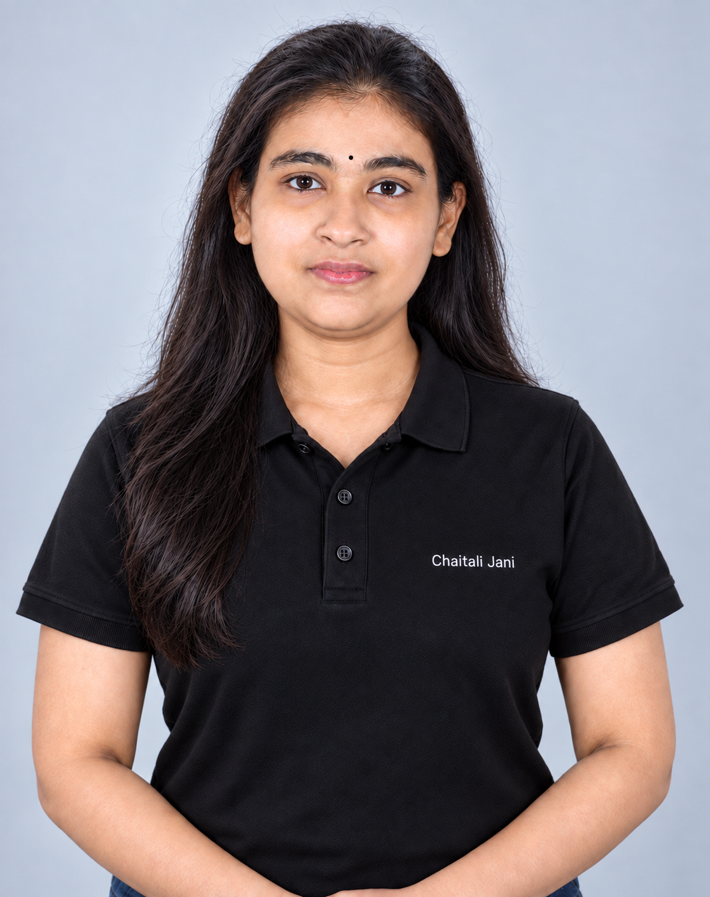

SUDBURY, ONTARIO · OPEN TO REMOTE WORK
Software Developer.
And the bigger picture.
Software Developer | Project Manager | Business Analyst | SEO
I’m Chaitali. I build websites and business systems, turn data into insights, coordinate project delivery and support digital marketing.
WordPress & PHP · Dynamics 365 · Power Platform

DEVELOPMENT WITH PURPOSEFrom an idea
to a working solution.
01 / WEB DEVELOPMENT02 / SYSTEM INTEGRATION03 / WORKFLOW AUTOMATION
SELECTED WORK
Built around real needs.
What I built, how it works,
and the part I played.
WEBSITE → BUSINESS SYSTEM
Creative GOAT
WORDPRESS + ELEMENTORA conversation
starts here.Project enquiry
Quote request →
Enquiry form → Dynamics 365 Sales
Workflow illustration · not a website screenshot01 / WORDPRESS & CRM
Creative GOAT
A company website with enquiry forms connected to the sales process.
- Designed and developed the website using WordPress and Elementor.
- Connected quote and project-review forms to Dynamics 365 Sales for lead and opportunity capture.
- Implemented SEO and Google Analytics.
WordPressElementorDynamics 365
Visit live website ↗E-COMMERCE / AZURE
RBFind. Compare. Shop.
Product searchComparisonCustomer accountsVendor applications
Feature illustration · not a website screenshot02 / E-COMMERCE
Reliable Bear
An online store built on nopCommerce and deployed to Azure App Service.
- Built and launched the e-commerce website.
- Delivered product search, comparison, customer accounts and vendor applications.
- Worked with ASP.NET, SQL Server and Azure hosting.
nopCommerceASP.NETAzure
Visit live website ↗MINING & INDUSTRIAL / WIX
FBuilt for industry.
Industrial productsProtective solutionsEngineering servicesCompany information
Content illustration · not a website screenshot03 / INDUSTRIAL WEBSITE
Flowcore
Built a Wix website showcasing a Sudbury business serving mining and industrial customers, with product-category pages, engineering services, company information and contact details.
WixWebsite development
Visit live website ↗CONNECTED DATA / AUTOMATION
Partner CenterMicrosoft GraphPax8
↓
Dataverse↓
Power BI · Licence insights04 / BUSINESS SYSTEMS
Less manual tracking.
More useful information.
Licence automation and reporting at Creative GOAT.
- Built a Dataverse catalogue for licences, employee assignments, Pax8 subscriptions and price changes.
- Created scheduled Power Automate flows to sync data from Microsoft Partner Center, Microsoft Graph and Pax8.
- Built licence dashboards for cost, assignment and utilization insights; manage Microsoft 365, Dynamics 365 and Azure licensing through Pax8.
REST APIsDataversePower BI
MORE SYSTEMS & DATA PROJECTS
Beyond the website.
JAN - APR 2026D365 Project Operations & Sales Hub
Automated time-entry approval, billable/non-billable calculations, retainer alerts at 80% and automatic deactivation when retainer hours run out. Added a custom Work Orders entity and customized the Time Entry table.
OCT - DEC 2025Executive project analytics
Built Power BI dashboards embedded in Dynamics 365 covering billable versus non-billable hours, estimated versus actual effort and overhead, with customer, project and work-order filters.
JUL - SEP 2025CI/CD for Dynamics 365
Set up Azure DevOps pipelines to deploy solutions between environments. Managed tasks and sprints in Azure Boards and maintained source backups in GitHub.
MAY - JUN 2025MailChain
Contributed to an enterprise email-management concept combining AI sorting, prioritization and filtering with blockchain traceability. Analysed data, designed database structures and built Power BI reports for usage and performance.
MARCH 2025 · COMPETITION WINNERHamilton transportation analysis
Built an interactive Python webpage to visualize gaps in street, sidewalk and cycling connectivity. Used ArcGIS Pro, Power BI and PowerPoint to present recommendations for access to healthcare, education and community walkability.
ONGOING RESPONSIBILITIESProject delivery & digital marketing
Plan scope, timelines and tasks in Azure Boards and D365 Project Operations. Coordinate client communication and delivery while leading SEO, Google Analytics and social media work for company and client websites.
A LITTLE ABOUT ME
Technical skills.
Business understanding.
I’m a Software Developer & Marketing Advisor at Creative GOAT. My work spans development, business analysis, project coordination and digital marketing.
Before moving into Microsoft business systems, I developed PHP/MySQL websites, responsive interfaces and content-management functionality. Today I bring that experience to websites, integrations and automation.
My experience on LinkedIn ↗Build
PHP · JavaScript · HTML · CSS · MySQL
Python · Laravel · Bootstrap · jQuery · ASP.NET
WordPress · Elementor · Wix · nopCommerce
Connect
Dynamics 365 · Power Apps · Power Automate
Dataverse · REST APIs · Ajax · JSON
Power BI · Tableau · ArcGIS Pro · SQL Server
Deliver
Azure · Azure DevOps · GitHub
SEO · Google Analytics · Search Console
Microsoft 365 · Pax8 · Sucuri website security
CAREER JOURNEY
Experience across development and delivery.
JUL 2025 - PRESENT · SUDBURY, ONSoftware Developer & Marketing Advisor
Creative GOATDynamics 365, Power Platform, Azure, licensing automation, project coordination, web development and digital marketing.
MAY - JUN 2025 · ONTARIOBusiness Analyst & Web Developer · Co-op
Creative GOATGathered requirements for AI and Web3 projects, translated business needs into technical and reporting requirements, designed databases and developed reports and web features.
JUN 2020 - MAY 2023 · ANAND, INDIASenior Web Developer
IT TO WEBDeveloped a water-heater product website using PHP, Ajax, HTML5, CSS3 and MySQL, with customer chat, online requests and WordPress blog integration.
JAN 2017 - MAY 2020 · ANAND, INDIAJunior Web Developer
Saurabh Web SolutionDeveloped and maintained MySQL databases and responsive interfaces; implemented a secure administration area for news-portal content uploads.
EDUCATIONM.Sc. Information Technology
University gold medalist · Sardar Patel University
2014–2016 · CGPA 9.33
BCA · Veer Narmad South Gujarat University
2011–2014 · CGPA 7.59
BUSINESS & DATAFrom analysis to action
Cambrian College
IT Business Analysis · 2023–2024 · GPA 3.93
Business Analytics · 2024–2025 · GPA 4.0
RECOGNITION1st place · Data analytics
Mohawk College competition · March 2025